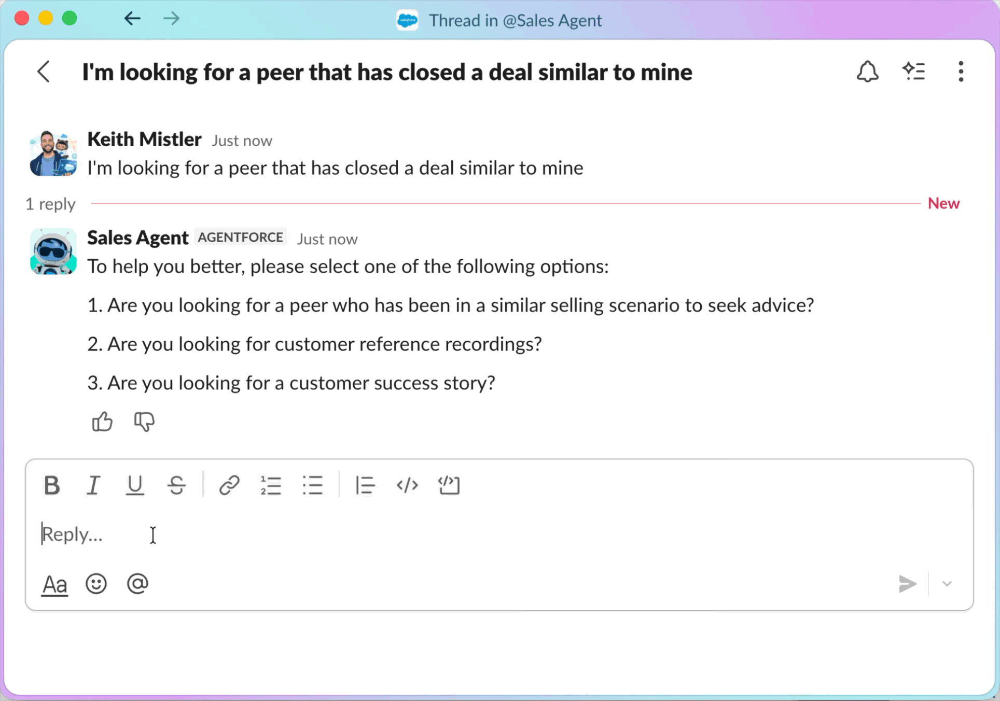
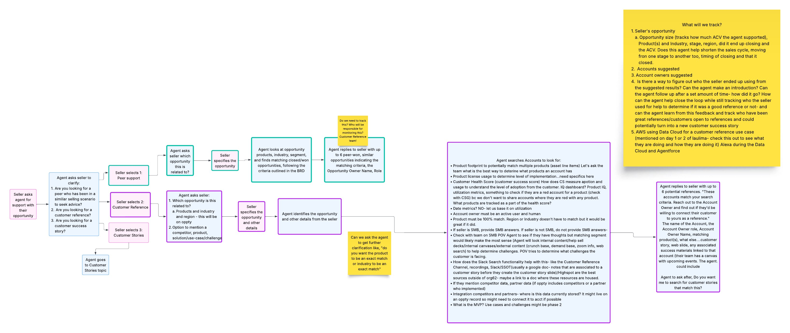
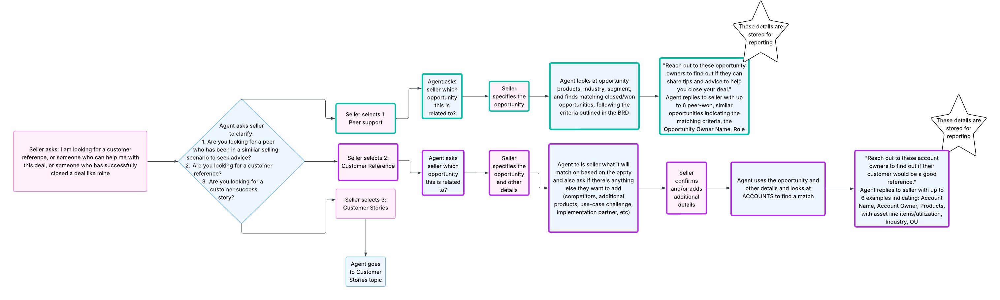
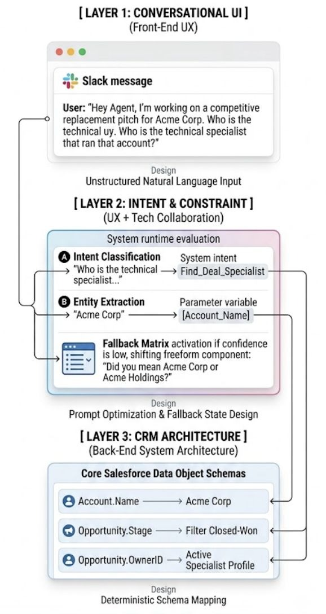
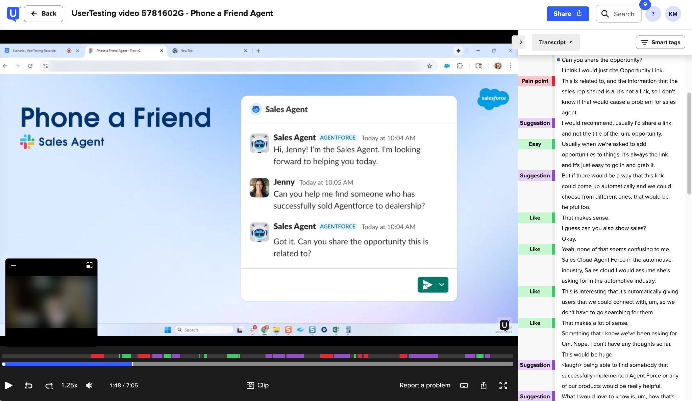
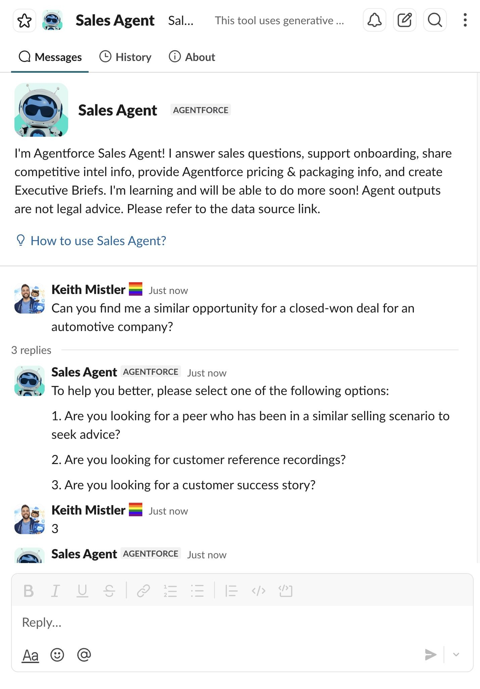

An AI agent that finds the rep who already won your deal
Phone a Friend is a Sales Agent skill in Agentforce. A seller describes the deal they're working on, and the agent finds peers who closed similar deals, or customers who can serve as references.

The best deal knowledge was stuck in people's heads.
Top reps knew how to win against tough competitors. But that knowledge lived in Slack threads, DMs, and calls nobody recorded. If you didn't already know who to ask, you were out of luck.
Sellers filed about 600 Deal Support Requests in a single year looking for help. The Customer Reference team handled 4,540 reference requests in FY25. Routing all of that by hand couldn't scale.
Up to six great matches, right in Slack.
The agent looks at the seller's open opportunity (product, industry, region, and segment) and returns up to six relevant matches. It covers two use cases:
Peer Support
Connects sellers with internal reps who closed similar deals, so they can get real advice fast.
Customer References
Finds customers with strong license use and a matching product footprint who can vouch for Salesforce.

Designing the conversation, not just the screens.
I joined mid-project. Before my first scoping call, I read the full business requirements doc so I could contribute right away. From there, I owned UX design and testing for the new skill.
Wrote the UX brief
Co-authored the brief that defined the problem, the audience, and the open questions: opt-out flow, data reliability, feedback loops, and phasing.
Mapped the dialogue
Designed the conversation flows, so sellers could get from question to match in as few turns as possible.
Pulled in experts
Consulted Salesforce's agentic design experts to pressure-test patterns for human-agent interaction.
Tested with sellers
Ran feedback sessions with AEs across AMER, EMEA, and LATAM, from SMB to Strategic, and stayed through V1 testing.
Three design principles
Efficiency
Get to a useful answer fast.
Accuracy
Only show matches sellers can trust.
Clarity
Make it obvious what the agent is doing.
Map it, wire it, test it, repeat.
Every path a seller could take
How the agent understands a request
Sellers testing the prototype
V1 shipped in Slack
↻ Findings from testing looped back into the dialogue map.
From open questions to a simple MVP.
My first map covered three paths: peer support, customer references, and customer stories. Sticky notes held the hard questions, like what to track, which data to trust, and when the agent should ask a follow-up.


Then we cut it down. In the MVP, the agent asks two questions (what kind of help, and which opportunity) and returns up to six matches.


Designing for how the agent thinks.
A good conversation depends on what happens behind it. I worked with engineering across three layers:
Sellers type naturally in Slack. No forms, no menus.
The agent works out what the seller wants and pulls out details like the account name. When it isn't sure, it asks: "Did you mean Acme Corp or Acme Holdings?"
Those details map to real fields, like account, stage, and owner, so matches come from closed-won deals.


Watching sellers talk to it.
I tested the prototype with sellers on UserTesting and tagged each moment as a pain point, suggestion, or like. A typical suggestion: let people share an opportunity link instead of typing its name.

Launched company-wide.
V1 Peer Support launched to sellers across the company and was called "a huge win for our Sales teams" in Salesforce's internal storytelling channel. The Customer Reference flow is the next milestone.
The numbers after launch

This project also changed how I design. I went from designing tools for users to designing the interaction between a seller and an AI agent.
The best AI products? You don't even think about the AI. It just works.
Good AI product design isn't about showing off the technology. It's about solving a real human problem in a way that feels natural.